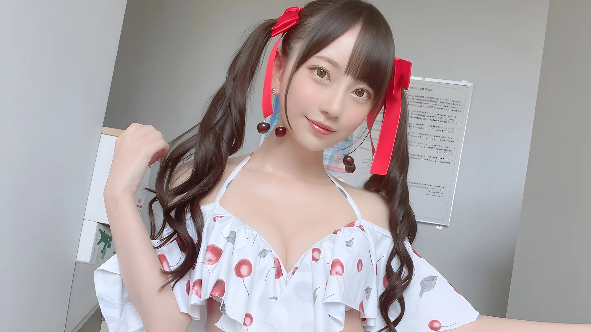
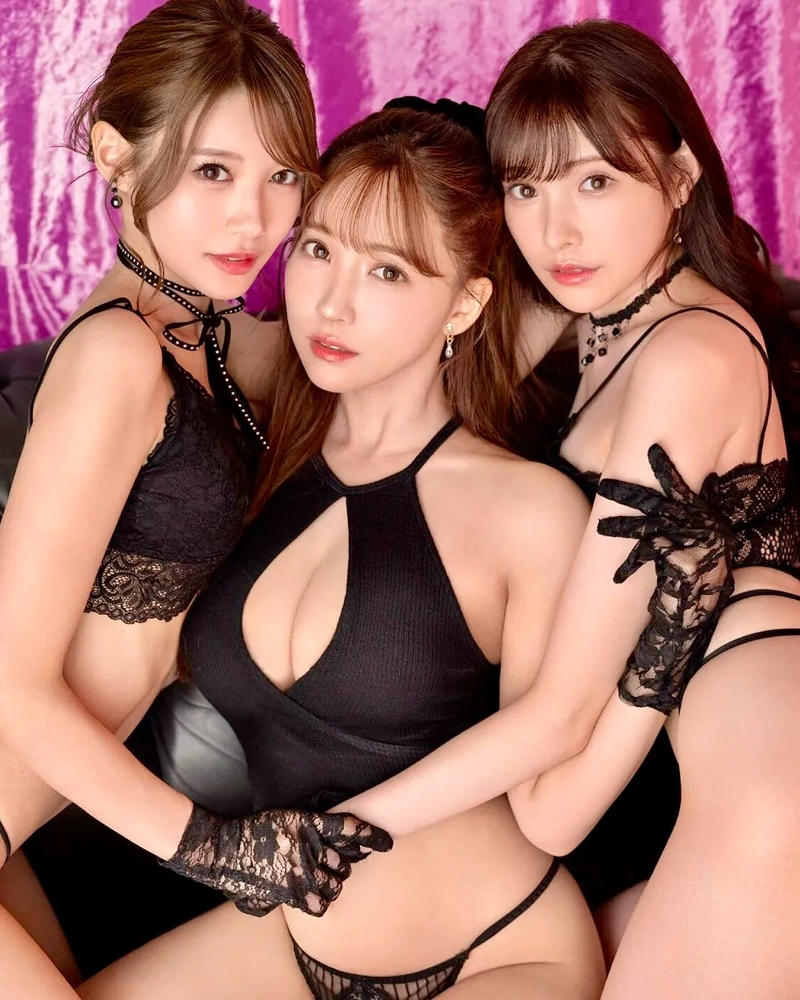
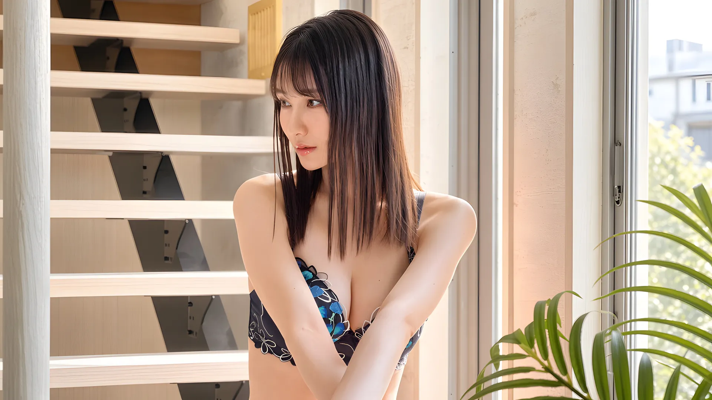

明るい未来へ、心が動き出す。
あのヒロインに、もう一度恋をする。
スクリーンの中で出会った、忘れられないあの笑顔。美しさ、強さ、そしてふと見せる優しさ。あのヒロインたちが、あなたの心をもう一度動かす。
Amazonで作品一覧を見るAmazonの出品一覧が開きます
ときめきは、何度でも始まる。
忘れられない美しさ。心が躍る恋の予感。胸いっぱいに広がる幸福感。
あの感動も、まだ知らない興奮も。さあ、心を輝かせる次の一本へ。
第一幕
美しさに、心が動き出す
忘れられない、ときめきがある。
あの笑顔、あのまなざし。思い出すだけで、今も心がふわりと弾み出す。
一瞬で心を奪われたヒロインの存在は、時間が経っても色あせません。ふとした瞬間によみがえるのは、ただの懐かしさではなく、もう一度味わいたい高鳴りです。
その美しさに、心まで奪われる。
何気ないしぐさも、輝く笑顔も。見つめるほどに、夢中になってしまう。
華やかさだけではなく、やわらかな空気や自分らしく輝く姿に触れるたび、観る側の心までふっと明るくなる。ヒロインが輝く作品には、そんな特別な力があります。
今なら、おまけのDVDもついてくる。
只今ご購入の方、先着100名様におまけのDVDをプレゼント中です。
100名に達し次第、プレゼントは終了となります。気になる一本があるなら、お得な今のうちに。
次の展開を待ちきれなかった、あのワクワクを覚えていますか？
胸が高鳴る。その瞬間が、たまらない。
恋の始まり、視線が重なる一瞬、思いがけない展開。物語の中で感情が動くたび、こちらまで胸が熱くなる。あの興奮こそ、何度でも戻りたくなる理由です。
その一本が、明日を輝かせる。
観終わったあと、なぜか笑顔になっている。そんな小さな魔法が、毎日を変えていく。
元気がほしい日も、少し背中を押してほしい日も、好きな作品はやさしく力をくれます。気持ちが上がる一本との出会いは、それだけで小さな再出発になります。
ひと目で、恋に落ちた。
スクリーンに彼女が現れた、その一瞬で。理由なんて、いらなかった。
一目惚れは、言葉で説明できないから特別です。あのとき胸に走った衝撃を、もう一度味わってみませんか？
最後にときめいたのは、いつですか？
あのヒロインに会いにいくAmazonの出品一覧が開きます
第二幕
ときめきと興奮が、止まらない
恋が動き出す。心が躍り出す。
視線が重なる、距離が近づく。胸の奥から込み上げる、抑えきれない期待と興奮。
物語が少しずつ動き始めるときの高揚感は特別です。どうなるのだろうと期待しながら観ているうちに、気づけばこちらまで気持ちが走り出します。
もう、目が離せない。
笑顔も、強さも、ちょっと不器用なところも。知るほどに惹かれて、気づけば夢中。
魅力的なヒロインは、完璧だからではなく、人間らしいからこそ愛しく見えます。意志の強さも、迷いも、可愛らしさも、その全部が心をつかみます。
ドキドキが、ワクワクに変わる。
次は何が起こる？ どんな結末が待っている？ 期待がふくらむほど、心はもっと熱くなる。
胸が高鳴るのは、展開そのものだけではありません。期待して、想像して、先を知りたくなる。そんな感情の動きが、作品を観る時間をもっと楽しくしてくれます。

可愛くて、愛おしくて、目が離せない。
見るたびにもっと好きになる。自分らしく輝くヒロインが、心を熱くしてくれる。
ありのままの自分を見せる姿に心を動かされる。だからこそ、ヒロインたちの存在は特別であり、あなたの心に最高の感動と興奮を与えてくれます。
ドラマチックな展開に、息をのむ。
見つめ合って、近づいて、触れ合う。そのもどかしさすら、愛おしい。
愛の物語は、結末よりも途中がたまらない。じれったい時間が長いほど、心はどんどん熱くなっていきます。
心が熱い。笑顔が消えない。この気持ち、何度だって味わいたくありませんか？
この興奮、観終わっても終わらない。
本当に心を動かす作品は、エンドロールが流れたあとも残り続けます。ふとしたときに思い出し、またあの高鳴りに会いたくなる。それが名作の力です。
たとえば、こんな出会いが待っています。
ラブストーリー、青春、そして時にはサスペンスも。今夜の気分に合う一本を。
この高鳴り、もう一度味わいたくありませんか？
ときめく一本を探すAmazonの出品一覧が開きます
第三幕
感動が、愛しさに変わっていく
その高鳴りを解放して、幸せになる。
心が動くたび、世界が少し鮮やかになる。そんな感情いっぱいの時間が、愛おしい。
感情を大きく揺らしてくれる作品には、不思議な幸福感があります。胸が熱くなって、最後には心地よい余韻が残る。至福の時間をあなたに与えてくれます。
愛しさが、胸いっぱいにあふれてくる。
その優しさも、不器用さも、まっすぐな想いも。気づけば、すべてが愛おしくなっている。
ヒロインを好きになる理由はひとつではありません。明るさも、迷いも、ひたむきさも、その全部が重なったとき、愛しさはぐっと深くなります。
何年経っても、心はこんなに熱くなる。
あの頃の感動が、今また鮮やかによみがえる。名作との再会は、いつだって新鮮だ。
昔観たはずの作品なのに、今観るとさらに心に届く。時が経つほど深く味わえるのも、名作ならではの楽しみです。
特典があるのは、今だけ。
只今ご購入の方、先着100名様におまけのDVDをプレゼント中！
100名に達し次第、プレゼントは終了となりますのでお急ぎください。好きな一本に、もう一本のときめきを添えて。
忘れられない瞬間が、またひとつ増える。
心を奪う笑顔。息をのむ展開。何度でも思い返したくなる、宝物のようなシーン。
名場面は、記憶に残るだけではありません。観るたびに新しい発見があり、そのたびに好きが深まっていく。そんな積み重ねも楽しみ方の一つです。
今だから、もっと好きになれる。
昔は気づかなかった魅力がある。もう一度観るたび、ヒロインへの愛しさが深くなる。
年齢や経験が変わると、同じ物語の見え方も変わります。今の自分だからこそ感じられる魅力があるから、“もう一度観る”には意味があるのです。
感動と興奮の連続から心が解放された。
エンドロールが流れても、あなたの余韻は終わらない。
物語が終わったあとの静かな時間まで含めて、作品の感動です。あの余韻に、もう一度ひたってみませんか？
今のあなたなら、もっと好きになれるはず。
もう一度、恋をしにいくAmazonの出品一覧が開きます
第四幕
懐かしさが、胸をしめつける
レンタル店の棚の前で、迷った夜がある。
パッケージの笑顔に惹かれて、一本を選ぶ。家に帰るまでの道のりさえ、楽しかった。
選ぶ時間も、楽しみの一部でした。出品一覧を眺めていると、あの頃のワクワクがふっとよみがえってきます。
誰かと一緒に観た、あの一本。
同じ場面で笑って、同じ場面で黙り込んだ。シーンは、思い出ごと胸に残っている。
もう一度観ると、あの部屋の空気や、交わした言葉まで思い出す。名作との再会は、自分の物語との再会でもあります。
ケースを開けるだけで、胸が鳴る。
配信にはない、手のひらに収まる重み。
ケースを開けて、ディスクをそっとセットする。そのひと手間さえ、物語の始まりを告げる合図になります。
あの声が、今も耳に残っている。
なつかしの声を聞いただけで、あの場面がよみがえる。
名シーンは映像だけではありません。セリフや声、臨場感あふれる音があなたの脳を刺激します。

あのヒロインに夢中だった、あの頃のあなた。今も、胸の奥にいませんか？
あの頃の自分に、もう一度会いにいく。
懐かしい作品を観ると、あの頃の自分がそっと隣に座ってくれる。忘れかけていた気持ちを、もう一度抱きしめにいきませんか？
あの頃のときめき、まだ覚えていますか？
懐かしの一本を探すAmazonの出品一覧が開きます
第五幕
心まで満たされる、至福の時間
今日くらい、思いきりときめきに浸ってもいいと思いませんか？
さあ、至福の時間を始めよう。
好きな一本を手に取り、物語の世界へ入っていく。それだけで、忙しい毎日が少しやさしくなります。作品に浸る時間は、心を満たす小さなご褒美です。
うっとりするほど、美しい時間。
輝くヒロイン、素敵な街並み、心をくすぐる物語。画面の向こうには、憧れがあふれている。
世界観に浸るだけで気分が上がる。見返すたびに、またこの空気を味わいたくなる。そんな幸福感が、作品にはたしかにあります。
一点物だから、出会いは一度きり。
ほとんどの商品が良品一点物。購入され次第、完売・販売終了となります。
今なら先着100名様に、おまけのDVDもプレゼント中。ぜひ、なくなる前に手に入れてください。
心が弾んで、幸せがあふれ出す。
夢中になって、笑顔になって、いつの間にか満たされる。そんな幸福感を、何度でも。
好きな作品に触れると、気持ちが少し軽くなる。観ているだけで心がほどけて、前向きな気分になれる。そんなひとときは、何度でもほしくなります。
いつもの一日が、特別な一日に変わる。
お気に入りの一本を再生する。それだけで、何でもない時間が心躍るひとときになる。
大げさな準備はいりません。好きな作品が一本あるだけで、夜が少し華やかになり、日常が少し豊かになる。そのささやかな変化が、たまらなく嬉しいのです。
好きなシチュエーションで、最高の一本を。
あなたの部屋でリラックスしながら。お気に入りの一本があれば、それだけで最高の空間になる。
ソファに深く沈んで、灯りを少しだけ落として。自分だけのシアターは、いつでも開館できます。

週末の夜は、二本立てで。
一本観終わっても、まだ夜は終わらない。
気になる作品を何本か手元に置いておけば、休日はそのまま自分だけの上映会に。贅沢な時間を、自分にプレゼントしてみませんか？
もう一度観たい。もう一度笑いたい。その気持ちに、正直になりませんか？
こんな幸せ、何度だって味わいたい。
一度で終わりにしたくない幸福感があります。手元に置いておきたい作品は、観たい気持ちがふと戻ってくるからこそ、何度でも価値を感じさせてくれます。
こんな夜を、今夜から始めませんか？
今夜の一本を選ぶAmazonの出品一覧が開きます
第六幕
ヒロインは、いつもあなたの味方
その笑顔が、明日の元気になる。
あのヒロインの笑顔に、どれだけ救われたことだろう。
日々の活力の源は、スクリーンの中の彼女でした。もう一度観れば、その元気をまた分けてもらえます。
くじけたっていい。また歩き出せばいい。
うまくいかない日も、ヒロインはそっと寄り添ってくれる。
落ち込んだ夜にお気に入りの一本を再生すれば、画面の向こうの彼女が「大丈夫」と微笑んでくれる。もう一度立ち上がる力は、そこからまた湧いてきます。
あなたは、あなたのままでいい。
ありのままのあなたを、ヒロインはいつも受けとめてくれる。
背伸びをしなくても、無理をしなくてもいい。彼女に会うひとときは、肩の力を抜いて、自分に戻れる時間です。
いつも、そばで応援してくれる。
仕事の日も、休みの日も。ヒロインは、変わらない笑顔で待っていてくれる。
大きな声で励まさなくても、そこにいてくれるだけで心強い。そんな存在が手元にあることが、毎日の支えになります。
頑張っているあなたに、誰かがそっと手を振っていたら？
スクリーンの向こうから、エールが届く。
今日もおつかれさま。そう言ってくれるような笑顔が、いつでもあなたを待っています。明日もがんばろうと思える力を、受け取りにいきませんか？
今日のあなたを励ましてくれる一本は、どれですか？
元気をもらえる一本を探すAmazonの出品一覧が開きます
第七幕
新しいときめき、新しい自分へ
ひとつの感動が、次の感動を連れてくる。
好きな一本との出会いは、ほんの始まり。まだ知らない素敵な物語が、あなたを待っている。
お気に入りが見つかると、また別の一本も探したくなる。そんなふうに楽しみは広がっていきます。次の高鳴りは、まだ出会っていない作品の中にあるかもしれません。
次は、どんな恋に胸を高鳴らせよう。
新しいヒロイン、新しい物語、新しい興奮。まだ見ぬ感動を想像するだけで、ワクワクしてくる。
再会の喜びも、新しい出会いの楽しさも、どちらも名作めぐりの醍醐味です。次にどんな物語が待っているのだろう。その期待が、気持ちを前へ進めてくれます。
おまけの一本がつくのは、今のうちだけ。
先着100名様限定で、ご購入の方におまけのDVDをプレゼントしています。
100名に達し次第、プレゼントは終了です。お気に入りの一本と一緒に、おまけの一本も楽しめるのは今だけ。ぜひ、お急ぎください。
ときめきが、明日への勇気になる。
自分らしく輝くヒロインに背中を押されて。新しい一歩を踏み出したくなる、そんな一本に出会おう。
明るい未来や再出発を感じさせてくれる物語は、観る人の心にも小さな灯りをともします。気分が上がる一本は、明日を少し楽しみにしてくれます。
まだ観ていない名作が、待っている。
話題になっていたのに、なぜか見逃していた一本。
今こそ、出会うタイミングかもしれません。知らなかったヒロインに新しく恋をする楽しみも、まだたくさん残っています。
幕が下りても、心には新しい光が灯っている。あなたも感じたことがありませんか？
物語が終わっても、ワクワクは続いていく。
観終わったあとに残るのは、静かな余韻だけではありません。もう少し前を向きたくなるような、軽やかな高揚感。それもまた、名作がくれる大きな魅力です。
次に恋をするヒロインは、誰ですか？
次の出会いを見つけるAmazonの出品一覧が開きます
終幕
次の一本から、また幸せが始まる
大切な一本は、手元に置いておきたい。
配信が終わっても、ディスクはなくならない。観たい夜に、いつでも会いにいける。
配信サービスでは、観られる作品が少しずつ入れ替わっていきます。DVDなら、好きなヒロインにいつでも、何度でも会えます。期限を気にせず、自分のペースで楽しめるのもディスクの良さです。
お宝の一本に、出会えるかもしれません。
掘り出し物も、状態はしっかり確認
ディスクとケースの状態を確認し、出品ページのコンディション欄に記載しています。
いつものAmazonで買える
お支払いも配送の確認も、お使いのAmazonアカウントのまま。新しい会員登録はいりません。
いつでも、何度でも
配信の期限を気にせず、観たい夜に、好きなだけ。手元の一本は、なくなりません。
迷ったら、まずはカートへ。
即決できないときは、とりあえずカートに入れておくのがお勧めです。
一点物は、購入され次第なくなります。先着100名様へのおまけDVDも、100名に達し次第終了。お得な今のうちに、お気に入りの一本を。
次の一本も、ここで出会えたら嬉しい。
一度きりの出会いではなく、何度でも。お気に入りを探す楽しみを、これからもご一緒に。
お気に入りが一本見つかると、また次の一本に会いたくなる。出品一覧には、そんな出会いをいくつも並べています。
これからも、心躍る出会いは続いていく。
懐かしい名作も、まだ知らない一本も。あなたの毎日に、新しいときめきと幸せを。
好きな作品との再会も、新しい物語との出会いも、どちらも人生を少し豊かにしてくれます。そうした小さな喜びを、これからも積み重ねていけますように。
あなたの棚に、ヒロインをもう一人。
好きな作品が並んだ棚は、それだけで心強い。
一本ずつ増えていく、自分だけのヒロインのコレクション。その棚を眺める時間も、楽しみのひとつです。
最後に、よくある質問を。
- 中古DVDでも、きれいに観られますか？
- 再生に支障がないことを確認して出品しています。ケースや盤面の細かな状態は、出品ページのコンディション欄でご確認いただけます。
- どこで、どうやって買えますか？
- ボタンを押すと、Amazonの出品一覧が開きます。気になる作品を選んで、いつものAmazonと同じ手順でご購入いただけます。
- DVDプレーヤーがなくても観られますか？
- DVDドライブ付きのパソコンや、ディスクに対応したゲーム機でも再生できます。
美しさに心を奪われ、胸を高鳴らせ、愛しさと至福に満たされる。そんな時間を、もう一度。
さあ、次のときめきへ。
あの感動も、まだ知らない高鳴りも、ここから先に続いていきます。気分が上がる一本、心を満たしてくれる一本を、探しにいきませんか？
DVDラインナップを見るAmazonの出品一覧が開きます